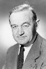
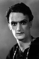

Country:United States, 94 minutes
Spoken languages:English
Genres:Drama, Comedy
Director(s):Alfred Hitchcock
Writer(s):Alfred Hitchcock, Alma Reville
Video Codec:Unknown
Number: 86


Certification:
Storyline:
During the Irish revolution, a family earns a big inheritance. They start leading a rich life, forgetting what the most important values of life really are. At the end, they discover they will not receive that inheritance; the family is destroyed and penniless. They must sell their home and start living like vagabonds.
Cast:  


Medium: Original DVD,
Comments: Part of: 100 Greatest Horror Classics
Loaned: No
Aspect ratio: Unknown